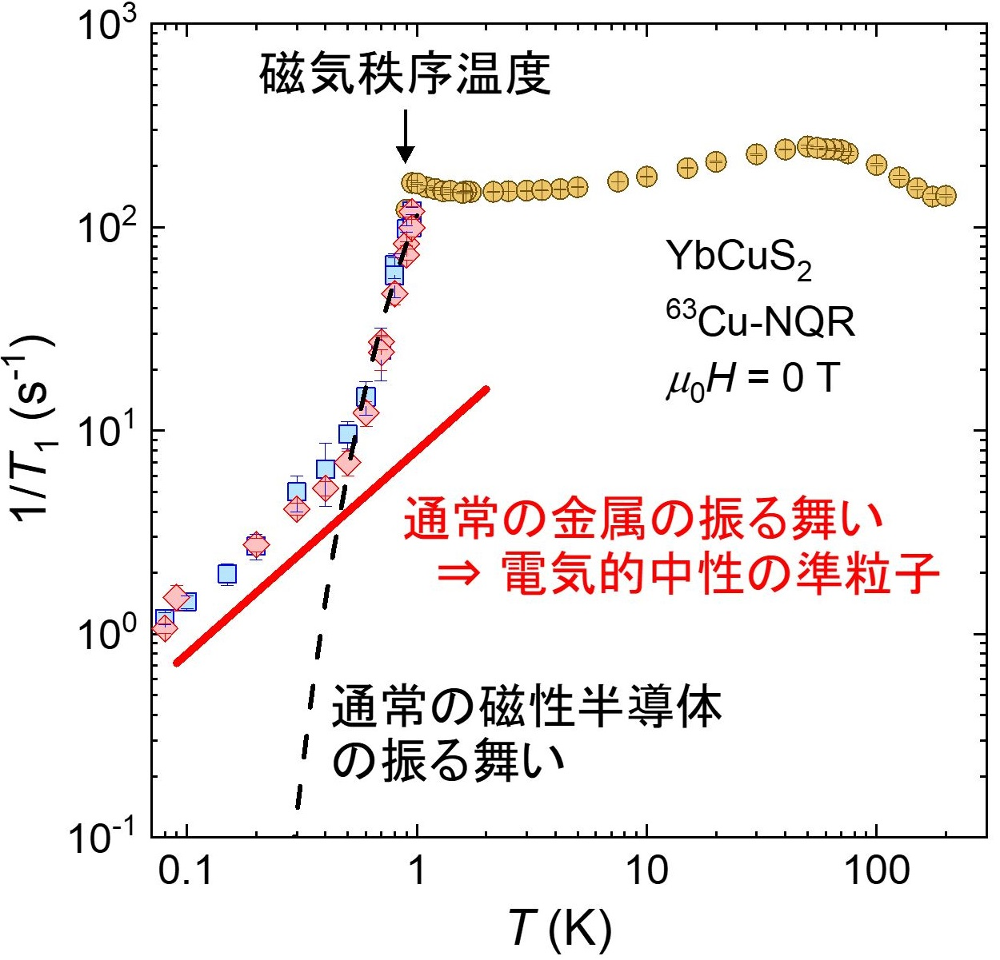
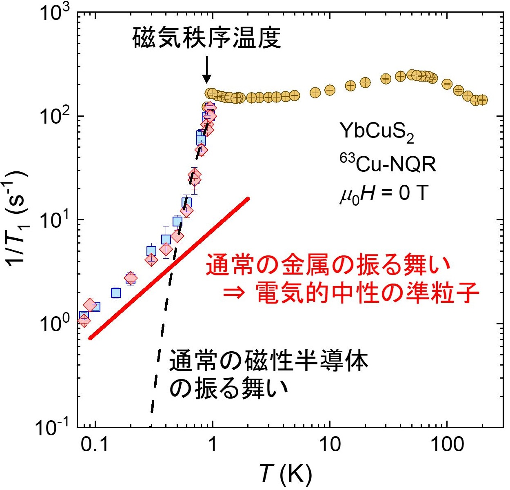

Research
Here, I introduce some recently published results of research activity and so on. For the list of my publications and conference presentations, see this links.
Experimental Identification of Superconductivity with Spin Degrees of Freedom
(first author: Katsuki Kinjo)
-New Phenomena in Spin-Triplet Superconducting Multiple Phases-
Superconductivity is known as a phenomenon where electrical resistance becomes zero when a substance is cooled to a low temperature. In superconductivity, two electrons form a paired state (Cooper pairs). Since electrons have spin and orbital degrees of freedom, Cooper pairs also have spin and orbital degrees of freedom. However, in almost all superconductors discovered so far, the Cooper pairs have zero total spin and orbital angular momenta, and have no degrees of freedom. Therefore, only one superconducting (SC) state is realized.
On the other hand, in SC states with spin or orbital degrees of freedom, SC multiple phases can be expected, and theoretical studies have been conducted.
However, since there are very few observed examples of such superconductors and the low SC transition temperature, it has been extremely difficult to search for phenomena derived from SC multiple phases.
We have investigated the SC spin rotation originating from the SC multiple phases in the superconductor UTe2 by nuclear magnetic resonance (NMR) measurements in a complex extreme environment.
Our results provide microscopic evidence for the remaining the spin degrees of freedom in the superconductivity of UTe2, inherent to the spin-triplet superconductivity.
The results of this study has been published inScience Advances.

〇Article information
K. Kinjo, H. Fujibayashi, H. Matsumura, F. Hori, S. Kitagawa, K. Ishida., Y. Tokunaga, H. Sakai, S. Kambe, A. Nakamura, Y. Shimizu, Y. Homma, D. Li, F. Honda, and D. Aoki
"Superconducting spin reorientation in spin-triplet multiple superconducting phases of UTe2"
Sci. Adv. 9, eadg2736 (2023); arXiv:2307.15784.
Kyoto University Research Information Repository, Kyoto University Press Release
ジグザグ鎖構造をもつ磁性体で現れる電気的中性な準粒子の発見！
近年、固体物理では、通常の磁性体で知られていない秩序状態や準粒子の研究が注目されています。なかでも系全体のスピンの配列が一意に定まらないフラストレーション現象ではそのような特異な物性が発現することが期待されています。我々は、希土類のイッテルビウム原子（Yb）がジグザグ鎖を組む磁性半導体YbCuS2に着目し、希土類ジグザグ鎖によるフラストレーションの効果について調べました。銅（Cu）核の核四重極共鳴（NQR）測定および比熱測定の結果、YbCuS2が非整合反強磁性秩序を示し、その秩序相で負の電荷をもつ電子とは異なる電気を運ばない電気的中性な準粒子が存在していることを明らかにしました。
本研究で得られた結果は従来のジクザグ鎖フラストレート磁性体の理論では説明できないことから、新しい理論の必要性を示しており、YbCuS2が新たなフラストレート磁性体のプラットフォームとして有望であることを明らかにしました。また、本研究で発見した中性準粒子は通常の電子とまったく異なる性質をもつため、次世代量子コンピュータや省エネルギーメモリデバイスなどの新しいデバイスへの応用が期待できます。
本研究成果は、2023年7月22日（日本時間）に、国際学術誌「Communications Materials」にオンライン掲載されました。
 

京都大学ホームページ、広島大学ホームページにプレスリリースをしました。
プレスリリース情報を学術変革(A)「アシンメトリ量子」領域ホームページに掲載していただきました。
Yahoo!ニュース、EE Times Japan、テック・アイ技術情報研究所、日本の研究.com、母校である竹田高校ホームページで取り上げられました。
〇論文情報
F. Hori, K. Kinjo, S. Kitagawa, K. Ishida, S. Mizutani, R. Yamamoto, Y. Ohmagari, and T. Onimaru
"Gapless fermionic excitation in the antiferromagnetic state of ytterbium zigzag chain"
Commun. Mater. 4, 55 (2023)
; arXiv:2201.07563.
Kyoto University Research Information Repository
YbIr3Si7における謎の中性粒子をNMRで見る！
(first author: Shunsaku Kitagawa)
物質は電気が流れるか流れないかで金属と絶縁体の二種類に分類され、金属は熱を伝えやすく絶縁体は熱を伝えにくいという性質をもちます。これは金属中で電気を伝える伝導電子が熱の運び手になっているからです。
近年、電気的には絶縁体で電気は伝えないにも関わらず、熱の伝導が金属と同じ振る舞いをする物質が見つかっており、注目を集めています。絶縁体中には伝導電子が存在しないため、これらの物質では電荷をもたずに熱のみを伝える謎の中性粒子が存在していると考えられています。
YbIr3Si7はその一例であり、低温での比熱と熱伝導率の測定から中性粒子が存在することが報告されていました。
我々はYbIr3Si7における中性粒子の磁気的な応答を核磁気共鳴測定法（NMR）を用いることで微視的な観点から調べました。その結果、YbIr3Si7の中性粒子がその磁気特性と密接に関係していることがわかりました。
本研究成果は、2022年9月16日に、国際学術誌「Physical Review B」にオンライン掲載されました。
〇論文情報
S. Kitagawa, T. Kobayashi, F. Hori, K. Ishida, A. H. Nevidomskyy, L. Qian, and E. Morosan
"Enhancement of charge-neutral fermionic excitations near the spin-flop transition in the magnetic Kondo material YbIr3Si7"
Phys. Rev. B 106, L100405 (2022) ; arXiv:2209.10844.
Mysterious Neutral Particles on Kondo Insulator YbIr3Si7 Observed by NMR!
Please wait for a while. I'm going to introduce my publications briefly.
S. Kitagawa, T. Kobayashi, F. Hori, K. Ishida, A. H. Nevidomskyy, L. Qian, and E. Morosan
"Enhancement of charge-neutral fermionic excitations near the spin-flop transition in the magnetic Kondo material YbIr3Si7"
Phys. Rev. B 106, L100405 (2022) ; arXiv:2209.10844.
Yb Zigzag-Chain Compound YbCuS2 Exhibits Metallic-like Excitations Despite Insulator!
Please wait for a while. I'm going to introduce my publications briefly.
F. Hori, K. Kinjo, S. Kitagawa, K. Ishida, S. Mizutani, R. Yamamoto, Y. Ohmagari, and T. Onimaru
"Gapless fermionic excitation in the antiferromagnetic state of ytterbium zigzag chain"
Commun. Mater. 4, 55 (2023)
; arXiv:2201.07563.
F. Hori, K. Kinjo, S. Kitagawa, K. Ishida, Y. Ohmagari, and T. Onimaru
"Impurity-Robust Bulk Gapless Excitation in the Yb-Based Zigzag Chain Compound YbCuS2"
J. Phys.: Conf. Ser. 2164, 012027 (2022).